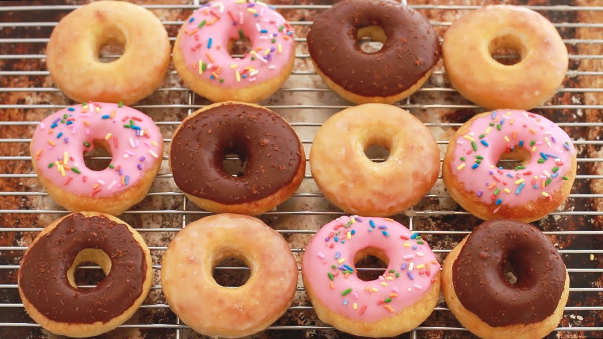

Doughnut

Description
Bite into this Japanese-inspired sweet fried doughnut from Tieghan of Half Baked Harvest.
Ingredients
- 2 cups sweet rice flour (mochiko), divided
- 3 tablespoons milk
- ½ cup milk
- 1 egg
- ¼ cup granulated sugar
- 1 ½ teaspoons baking powder
- 3 tablespoons unsalted butter, melted
- 1 teaspoon vanilla
- Parchment Paper
Chocolate Glaze
- ⅓ cup coconut milk
- 12 ounces dark chocolate, chopped
- ⅓ cup powdered sugar
- Flaky sea salt, for topping
Steps
- In a microwave-safe bowl, whisk together 1/4 cup sweet rice flour and 3 tablespoons milk. Microwave on high for 30 seconds, stir and then cook another 20 to 30 seconds longer or until the dough is cooked through, looks opaque and is bouncy, but not so cooked that it is dry. The mixture should still be moist. Set aside to cool slightly.
- In the bowl of a stand mixer with the dough hook attached (you can also do this by hand, but a stand mixer makes it much easier), add the remaining 1 3/4 cups sweet rice flour, 1/2 cup milk, egg, granulated sugar, baking powder, butter and vanilla. Add the cooled, cooked rice flour mixture.
- Knead the dough on low speed until the dough comes together. Increase the speed to medium and knead until the mixture is completely smooth and mixed, about 3 to 5 minutes. The dough will be sticky.
- Line a baking sheet with Parchment Paper.
- Sprinkle a clean surface with rice flour and scrape the dough out onto the floured surface. Sprinkle the dough with enough flour to prevent it from sticking. Roll the dough out until is it 1/2 inch thick. Cut out as many doughnuts as you can, using a 3-inch biscuit cutter for the doughnuts and a 1-inch biscuit cutter for the doughnut holes. Place the doughnuts on the prepared baking sheet as you work. Gather any scraps of dough back into a ball and roll the dough out. Cut as many doughnuts as you can and repeat the process, you should get around 10 doughnuts.
- In a heavy-bottomed pot, heat 3 to 4 inches of oil to 330 degrees F. Do not let the oil go over 350 degrees F - or the doughnut will burn before the insides are fully cooked. Fry the doughnuts in batches for 2 to 3 minutes per side. Drain onto a paper towel lined baking tray. Repeat until all the doughnuts have been fried. Allow to cool slightly before glazing.
- If dipping the doughnuts in the vanilla glaze first, do so now and let them dry on a cooling rack for 5 minutes before dipping in the chocolate glaze.
- Chocolate Glaze: Place the cream in a small sauce pan and bring to a simmer. Remove from the heat and stir in the chocolate until melted and smooth. Add the powdered sugar and vanilla, stirring until smooth. Let cool slightly.
- Dip or drizzle each doughnut with the glaze. Sprinkle with flaky sea salt. Eat.